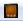

UDN
Search public documentation:
MigratingMobileJune2011KR
English Translation
日本語訳
中国翻译
Interested in the Unreal Engine?
Visit the Unreal Technology site.
Looking for jobs and company info?
Check out the Epic games site.
Questions about support via UDN?
Contact the UDN Staff
日本語訳
中国翻译
Interested in the Unreal Engine?
Visit the Unreal Technology site.
Looking for jobs and company info?
Check out the Epic games site.
Questions about support via UDN?
Contact the UDN Staff
모바일 프로젝트를 2011년 6월 UDK 베타로 이주시키기
문서 변경내역: Jeff Wilson 작성. 홍성진 번역.
개요
머지된 작업방식
- 커스텀 콘텐츠 패키지의 위치를
MobileGame\Content디렉토리에서UDKGame\Content디렉토리 속으로 옮깁니다. - 맵의 위치를
MobileGame\Content\Maps에서UDKGame\Content\Maps으로 옮기고, 확장자를.mobile에서.udk로 바꿉니다. -
MobileGame\Config.ini 파일에 있는 변경사항을UDKGame\Config\Mobile.ini 파일로 머지합니다. 특히:-
MobileGame\Config\DefaultEngine.ini->UDKGame\Config\Mobile\MobileEngine.ini -
MobileGame\Config\DefaultGame.ini->UDKGame\Config\Mobile\MobileGame.ini -
MobileGame\Config\DefaultInput.ini->UDKGame\Config\Mobile\MobileInput.ini
-
.udk 로 바꿔 주실 것을 추천합니다. 새 맵이나 다른 이름으로 저장한 맵은, 명시적으로 설정하기 전에는 항상 .udk 로 저장될 것입니다.
이름변경된 게임플레이 클래스
MobileGame, MobilePC, MobilePawn 클래스의 이름이 SimpleGame, SimplePC, SimplePawn 으로 각각 변경되었습니다. 프로젝트의 GameType, PlayerController, Pawn 클래스가 위의 클래스에서 직접 확장(extend)하거나 리퍼런스하는 경우, 그 리퍼런스가 새로운 클래스 이름을 가리키도록 업데이트해 줘야 합니다. 그렇지 않으면 프로젝트 컴파일시 에러를 뿜게 됩니다. 함수성은 그대로 남아있으니 리퍼런스만 업데이트해 주면 모든 것이 예전처럼 잘 돌아갈 것입니다.
이 클래스는 매우 기본적인 것들이라, 아무런 수정 없이 사용하면 1인칭 모드의 총조차 기대하기 힘듭니다. 업그레이드할 때 커스텀 게임타입을 활용하는 경우, (아래 설명된) 새로운 Default Game Type 프로퍼티, .ini 파일 세팅, 커스텀 스크립트 코드 등을 통해 사용하려는 게임타입으로 맵 설정을 해 줘야 합니다.
게임타입 지정하기
SimpleGame 이 된다는 점입니다. SimpleGame 에는 맵 접두사에 따라 게임타입을 선택하는 함수성이 추가되어 있으니, DM, VCTF 등 UT-스타일 호환 맵 접두사는 물론이고, .ini 파일에 지정한 커스텀 맵 접두사와 맵에 사용한 것도 예상대로 돌아갈 것입니다.
에디터에서 미리보기

) 이 추가되었습니다. 이 버튼을 토글하면 모바일 기능 에뮬레이션이 켜져, 게임이 모바일에서 어때 보이는지 대부분 렌더링을 통해 에디터에서 강제로 시뮬레이션하도록 합니다. 라이팅 빌드시나 패키지 저장시의 PVRTC 압축같은 세팅은 물론, 머티리얼(에 옵션 설정을 해 뒀다면) 오토 플래트닝까지도 켜 줍니다. 툴바나 개인설정 메뉴의 항상 모바일용 콘텐츠 최적화 명령으로 이 기능을 켜지 않으면 쿠커가 텍스처를 PVRTC 로 압축할 때 저품질의 빠른 압축 방식을 사용하기에, 모바일 디바이스에서 미리볼 때 텍스처와 라이트맵 품질이 매우 떨어져 보이게 됩니다. Emulate Mobile Features (모바일 기능 에뮬레이션)을 켜면 에디터 뷰포트에 사용되는 렌더러를 변경합니다. 추가로 에디터에서 플레이 기능은 모바일 인풋, 콘트롤, 렌더링을 사용합니다.
추가로 에디터에서 플레이 기능은 모바일 인풋, 콘트롤, 렌더링을 사용합니다.